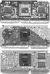
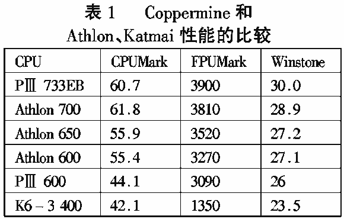
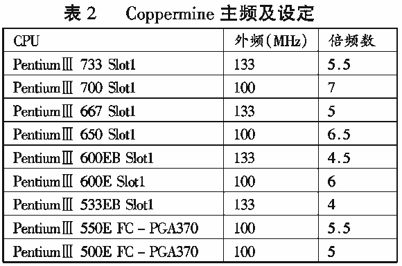

|
|
| 当前位置：电脑报电子版 > 1999 年 > 44 期 > 硬件周刊 > Coppermine——英特尔的世纪杀手 |
| 《 Coppermine——英特尔的世纪杀手 》 |
| 10月25日，Intel终于发布了基于0.18微米技术制造、开发代号为“Coppermine”(铜矿)的新一代PentiumⅢ处理器。与以往不同的是，此次Intel所发布的产品包括桌面PC、笔记本PC和工作站处理器在内的15款产品，其中桌面PC的高端产品不仅可以工作在133MHz外频，而且最高主频已达到733MHz，超过AMD前不久发布的700MHz主频的Athlon处理器，在Athlon几度领跑的竞争中Intel重新领先。
一、Coppermine的特性 新的Coppermine处理器看起来和老PentiumⅢ（代号Katmai）有些相似（见下图，从上到下依次为Athlon、Coppermine和Katmai），不过你会发现，在PCB板上找不到二级缓存。原来，它的二级缓存是集成在处理器中的！像赛扬，这可能是你的第一反应，不过，Coppermine的二级缓存是256K，而赛扬只有128K。不仅如此，它在技术和性能上都有长足的进步。Coppermine处理器的金属层使用了静态铝工艺，同Athlon相同。1．内置工作在核心频率下的256KB二级缓存 Coppermine处理器提供了全新的单芯片（One－Chip）解决方案，因而在性能上优于老PentiumⅢ的单边接触盒集成CPU核心、二级缓存控制器和缓存芯片的结构。同时作为高端主流产品，Coppermine仍然使用Slot1架构，但对于基于Coppermine核心的某些低端处理器也提供Socket370架构的版本，Intel称之为新FC－PGA370（Filp Chip－PGA）处理器。最近发布的这类处理器只有PentiumⅢ500E和PentiumⅢ550E两种版本，但Intel计划未来的Coppermine处理器将逐渐放弃Slot1架构，转而使用FC－PCA370架构。Coppermine处理器内置了256KB的二级缓存，与赛扬处理器一样，二级缓存是直接集成在CPU核心中的。虽然容量只有原来Katmai的PentiumⅢ处理器容量的一半，但它的工作主频与CPU的核心频率相同，因而在速度比Katmai处理器要快。 2． 0.18微米技术制造工艺 由于采用0.18微米技术的制造工艺，Coppermine处理器的硅芯片面积非常小，但在它的内部却集成了二千八百万个晶体管，远超过Katmai的九百万个晶体管，面积只有106mm2，而Katmai芯片的面积却为128mm2 ，这意味着只需更少的硅材料来生产Coppermine，生产成本也要低得多。 Coppermine处理器即使在高时钟频率下也无需更高的电源，它可以工作在1.1V～1.7V的电压下，而其电源消耗仅为同级的AMD Athlon处理器的三分之一。因而Coppermine的发热量少，其功耗也相应地更低，也更容易应用于对电源消耗要求苛刻的笔记本电脑上。 3．先进的缓存转换架构 前面我们已经提过Coppermine在二级缓存（L2 Cache）方面的改进，它集成的256KB二级缓存不仅运行在同频时钟下，而且相对于其他处理器有不小的改进。 首先，这个二级缓存使用一条256位的宽带数据通路，它相当于采用64位数据通道外部二级缓存的Katmai处理器的4倍。因此Coppermine每两个时钟能转换32字节的二级缓存，这样在处理器的核心与二级缓存之间的理论数据带宽将达到11.2GB/s。 其次，二级缓存的结构优化大为增强，理论上可达到3％～6％的性能提升。 另外，二级缓存的潜伏周期大为缩短，仅为Katmai处理器的二级缓存的四分之一。潜伏周期的缩短能够避免因Cache未命中造成速度下降的损失，从而提高系统效能。 4．先进的系统缓冲器 这也是Coppermine处理器众多先进功能中一项，它用6个填充缓冲器代替先前Katmai处理器的4个填充缓冲器；用8条总线队列代替原来的4条；用4个回写缓冲代替原先的1个。这项改进使得Coppermine在133MHz时钟总线上运行的时候更具有优势。同时更多的缓存能够更显示体现前端总线的操作速度，并再次地缩短这些操作的延迟时间。 5．适用于移动电脑系统的SpeedStep技术 SpeedStep是Intel此次提供的一种应用在笔记本电脑上的新技术，当笔记本电脑插接一个外部电源工作时，在SpeedStep技术的支持下，笔记本式的Coppermine处理器可以全速与全电压的方式运行。而当笔记本电脑使用电池时，SpeedStep可以使Coppermine降低运行速度和电压以降低电源消耗，延长运行时间，当然这样不免也降低了系统性能。 二、Coppermine的性能测试 1．Coppermine与Katmai。尽管Coppermine只是原来的Katmai的改进版本，但在同主频处理器上，外频的提高使得整体性能将优于Katmai。在应用程序的表现上，Windows98SE平台下的133MHz外频的Coppermine比100MHz外频的Katmai快5％左右，WindowsNT平台下则将近快10％，可见Coppermine宽带数据传输更适用于NT系统。在Quake3的游戏测试中，Coppermine系统比Katmai有将近20％的性能提高，而在3DMAX的图形处理中，性能则提升非常有限。在测试中还可以看到0.18微米制造技术体现其强大的实力，0.18微米的100MHz外频的Coppermine居然比0.25微米的133MHz外频Katmai的性能还高，足见其同主频运行的256KB二级缓存更利于性能的提高。  三、Coppermine的超频性能 良好的超频性能一向都是Intel处理器的良好品质之一，尤其是每次改变制造工艺后的处理器产品。采用0.25微米技术生产的Katmai处理器理论上无法超过630MHz（6×105MHz）的主频，事实上我们也很难看到能超过600MHz的Katmai处理器。而在这一点上，Athlon处理器似乎更有优势，它的各款处理器不仅采用0.25微米制造工艺，而且还都具有不错的超频性能，虽然目前基于Athlon的主板无法更改其外频，但通常改变K7芯片上某些跳线的设定，可以达到超频的目的（编者：感兴趣的读者可以在我们的《PC DIY用电脑》光盘杂志上看到），但事实上它也无法超越115MHz的外频设置。而在Coppermine发布后，0.18 微米技术的制造工艺，使得超频成为可能。表2列出了Intel此次发布的几款基于Coppermine核心的处理器外频和倍频设计，可以看到500MHz和550MHz的Coppermine的倍频与667MHz的733MHz相同，因而你可能更容易在133MHz的前端总线下把500MHz超到667MHz或是把550MHz超到733MHz，这对于0.18微米的技术而言是轻而易举。不过在市售的产品中，Intel只在低端市场上发布两款Coppermine产品，而且是采用FC－370PGA封装的Socket370架构。即使如此，在使用基于VIA Apollo 133＋芯片组的Socket370架构的平台上，仍然有机会达到超频的目的。而对于更高于733MHz以上的产品，恐怕没那么容易达到超频的目的。  四、Coppermine的前景 Coppermine作为强有力的产品，主要是针对高端商用市场与Athlon一决高下，由于成功向0.18微米的制造技术转型，功耗的降低和性能的明显提升，使得它相对Athlon具有较明显的优势。尽管如此，在桌面PC市场上，它的前景也不容乐观。1．主板芯片组的支持。尽管Intel一度想以i820芯片组主导高端主板市场，以达到全面控制PC133市场的目的，但推广RAMBUS总线遭到众多厂商的反对，加上设计上的错误以及RAMBUS高昂的价格，i820芯片组不得不推迟发布。而在高端的桌面主板市场上只有VIA的Apollo Pro133＋主板独领风骚，虽然Intel有支持133MHz前端总线的i810e芯片组，但由于其整合图形芯片，只能应用于低端市场，这样对于Coppermine处理器，唯一的选择只有基于Apollo Pro133＋的主板。由于VIA本身即是PC133极力的倡导者，收购Cyrix后代号“约书亚”的处理器正待发布,这样的结果对于Intel来说并不是好消息。而且在兼容性上,Intel的主板芯片组仍是最好的，如果要充分发挥Coppermine的性能和扩大Coppermine的市场占有率，Intel必须尽快发布其高端的i820芯片组。 2．Athlon的强势竞争。Athlon是AMD针对高端市场的产品，它知道如果只依靠低端市场的价格竞争，永远无法摆脱Intel的巨大阴影。应该说Athlon成功地依靠EV6总线和先进的设计在处理器的竞争上超越Intel。Coppermine虽然在性能上打败了Athlon，但Athlon仍然还可以获得更好的性能提升——Athlon 700MHz仍然采用的是0.25微米的制造工艺。目前AMD计划在11月份将所有的Athlon处理器转向0.18微米的铜制造技术生产，如果0.18微米的Athlon面世的话，AMD先前承诺的1GHz的处理器将成为可能，事实上它也必将带动其性能的提升，对于芯片设计的优化以及最大的2MB二级缓存来说，Athlon可能更具有优势。在主板支持上，Athlon由于自身的研发和VIA的支持，主板产品基本都已成熟，作为高端应用产品，Athlon依然是Coppermine技术上最强大的竞争对手，尽管AMD在生产能力上不如Intel。 五、结语 Coppermine作为新的一代的高性能处理器，对于商业应用、游戏、图形图像处理及其他更广泛的应用来说，提供了极好的支持。而PC133总线的进一步确立，Coppermine产品涵盖桌面PC、笔记本PC以及工作站系统的所有高低端市场，在这一点上，Coppermine无疑是想进一步巩固它主导CPU市场的地位。而且根据Intel的计划，在2000年4月，Intel将有1GHz主频的产品问世。而实际上，无论Intel或是AMD能否如期发布1GHz 的产品，对CPU的发展来说，Coppermine面市也是在开辟CPU的一个新纪元。(云中熊) |
| 下载本期推荐软件 | 页 首 |
| 《电脑报》版权所有，CPCW网站编辑部设计制作发布 |